Знакомство
Первый экран задаёт настроение и показывает, что такое AMI!.
Как интернет-магазин моментальных камер превращает выбор техники в историю о воспоминаниях.
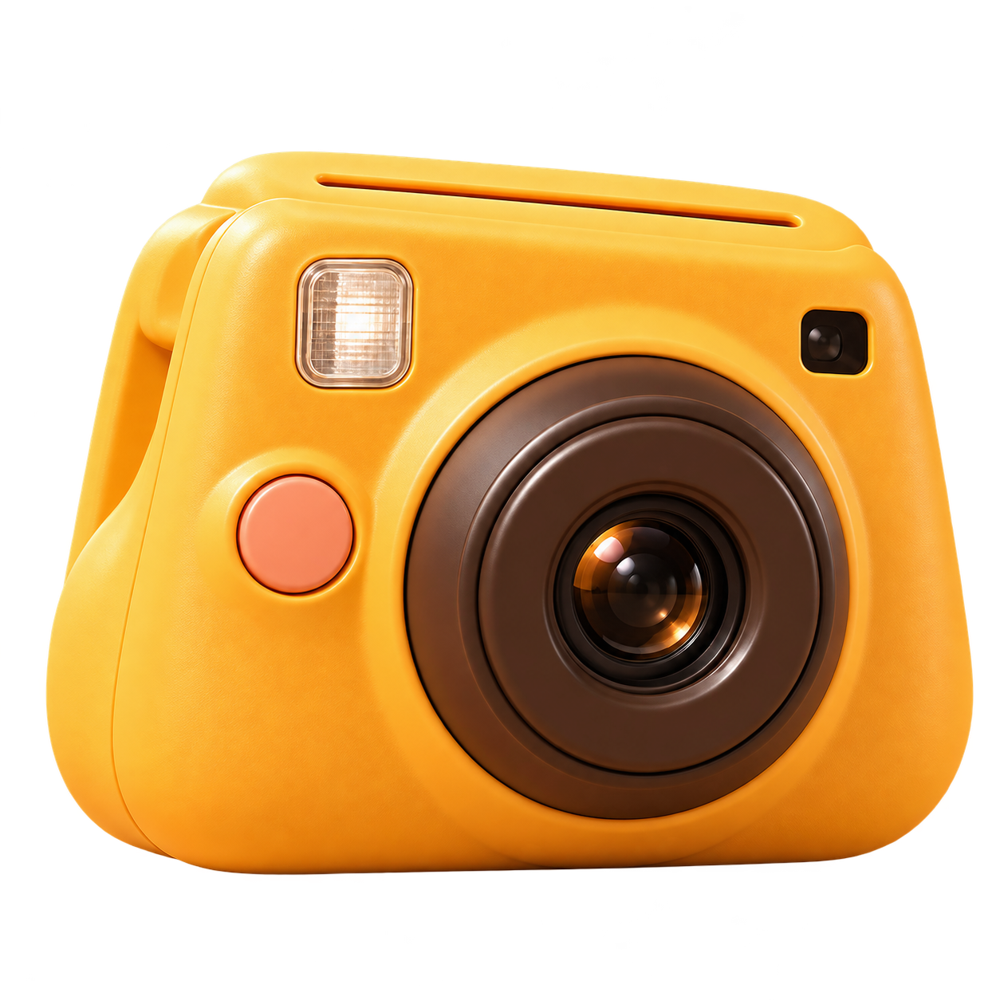
О проекте — от тех, для кого он создавался.
Заказывали разработку дизайна и сайта для магазина мини-фотокамер, получился очень мило, как мы и хотели! До этого у нас уже был сайт, но не подходил по стилистике и функционалу, заказов было не много. Сейчас заказов заметно больше стало! Советую эту студию, спасибо!
AMI! — интернет-магазин моментальных камер и всего, что помогает сохранить маленькие истории.
Сайт говорит не о характеристиках ради характеристик, а об эмоции: поймать случайный кадр, подержать снимок в руках, подарить его близкому человеку. При этом за яркой оболочкой остаётся понятный путь к товару.

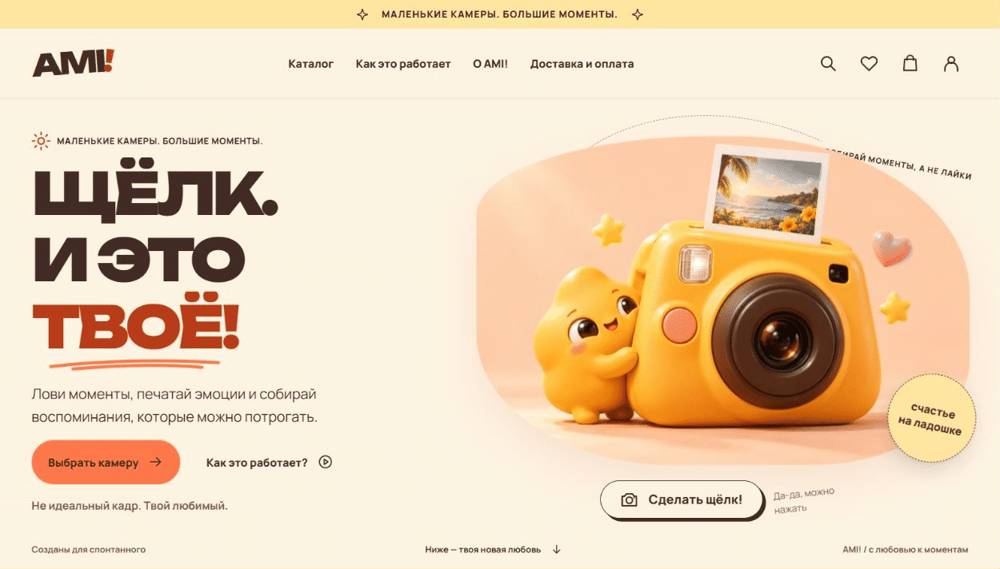
От первого экрана к категориям, товарам и историям бренда — и дальше до самого футера. Одна страница объединяет эмоцию и понятный путь к выбору.
Показать ценность моментальной фотографии через знакомые, живые ситуации.
На первом экране — короткое обещание, узнаваемый продукт и ясный переход к выбору камеры. Дальше история раскрывается через категории, любимые товары, три шага использования, галерею моментов, подарочный набор и ответы на вопросы.
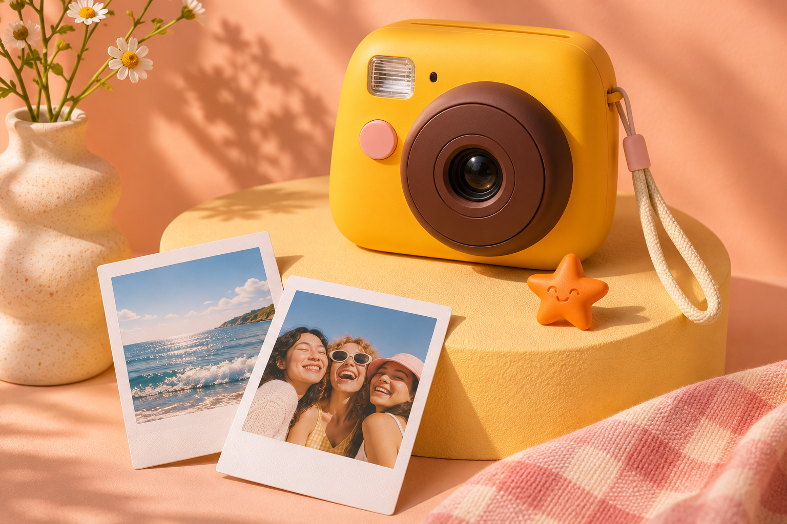
Солнечная палитра, округлые формы и дружелюбный голос собираются в единый характер бренда.
Крупные заголовки Unbounded работают как эмоциональные акценты, Manrope помогает читать описания и интерфейс. Кнопки, стикеры, карточки и рукописные детали поддерживают ощущение игры — и не мешают ориентации.
Характер в заголовках.
Спокойствие в деталях.
Каталог сохраняет характер бренда и помогает быстро сузить выбор: категории, поиск, цена, цвет, бренд, формат и сортировка.
Камеры, маленькие радости и поводы улыбнуться.
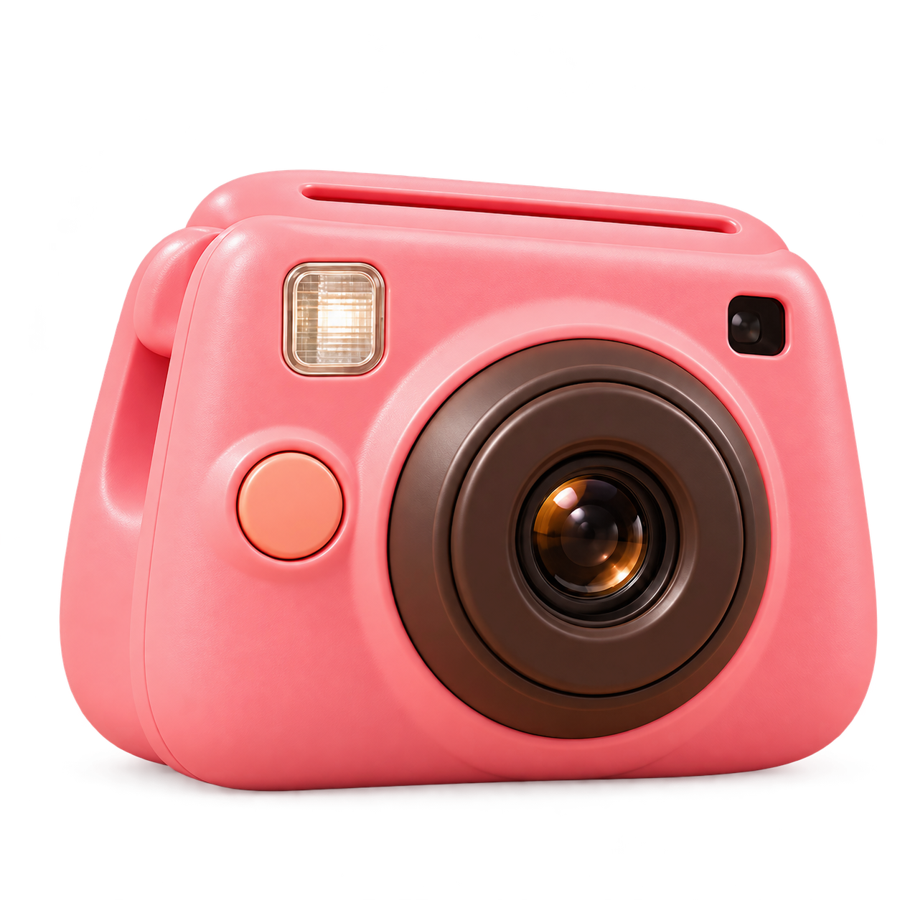
AMI Snap MiniStrawberry • В наличии8 490 ₽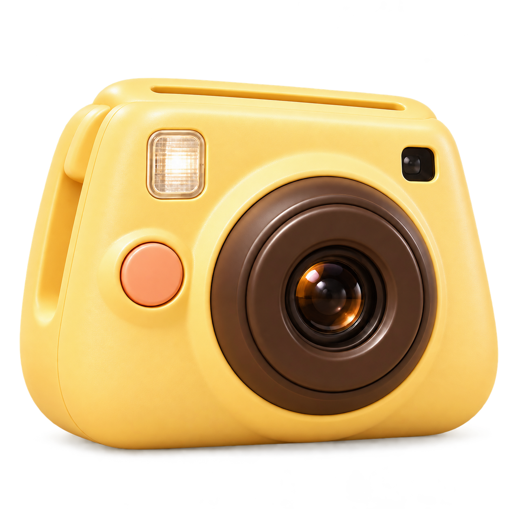
AMI Snap MiniVanilla • В наличии8 490 ₽Карточка соединяет визуальный образ камеры и информацию, нужную перед покупкой.
Ракурсы и увеличение помогают рассмотреть вещь. Выбор цвета, количество, наличие и кнопка корзины находятся рядом; ниже — комплектация и подходящие аксессуары.
Маленькая камера для прогулок без плана и моментов без дубля.
8 490 ₽Твой цвет: Манго
Камеры, маленькие радости и поводы улыбнуться.
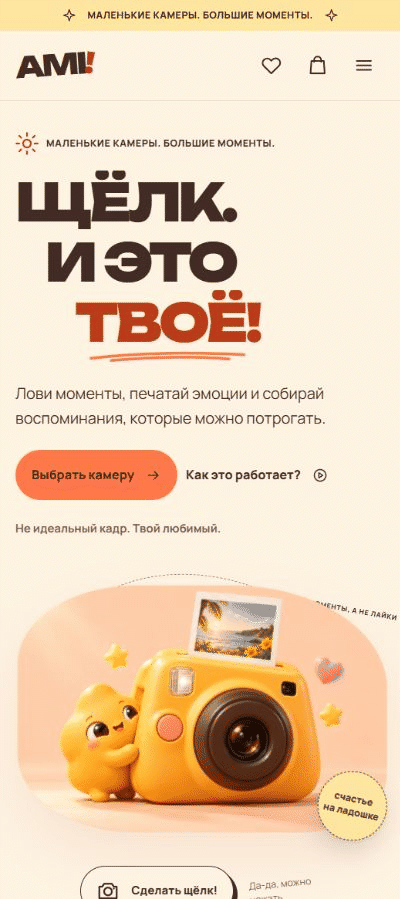
Полная мобильная версия магазина: главная страница, каталог и карточка товара. Выбирать камеру и оформлять заказ удобно прямо со смартфона.
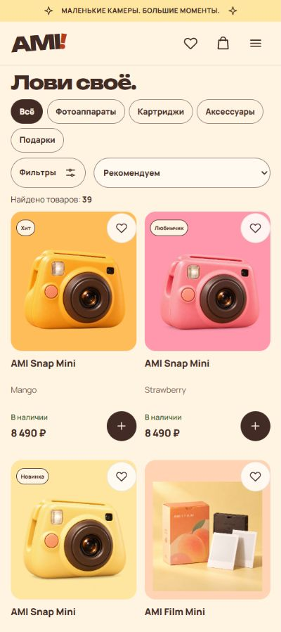
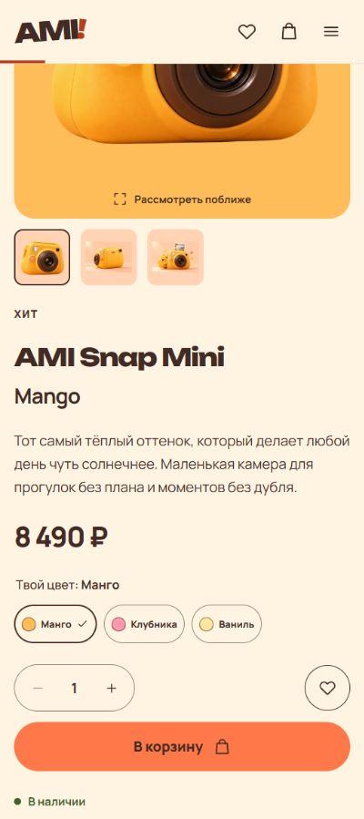
От знакомства с камерой до идеи подарка: одна визуальная система объединяет разные части истории.
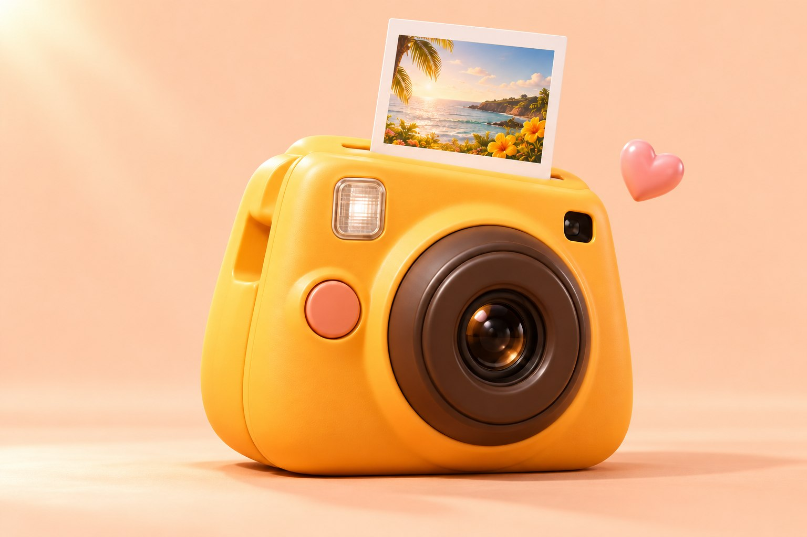
02 / Ловишь любимый момент.Никаких дублей. Просто ты, твои люди и один щелчок.
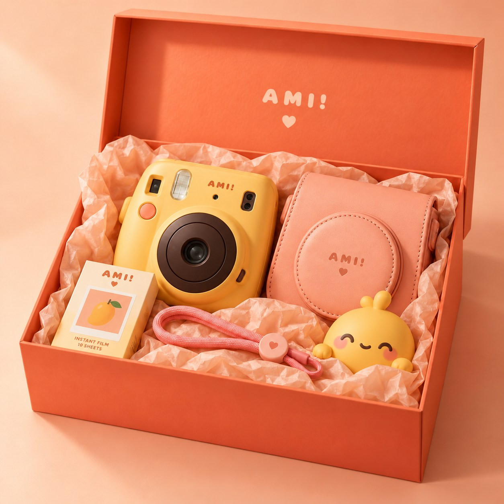
AMI Starter BoxВсё для первой большой истории в одной маленькой коробке.
История ведёт пользователя от вдохновения к конкретному действию.
На сайте можно перейти в каталог, сравнить варианты, изучить товар, добавить его в избранное или корзину и познакомиться с условиями доставки.
Первый экран задаёт настроение и показывает, что такое AMI!.
Категории и фильтры помогают найти подходящую камеру или аксессуар.
Карточка раскрывает цвет, наличие, состав и совместимые товары.
Следующий шаг — собрать выбранное и перейти к оформлению.
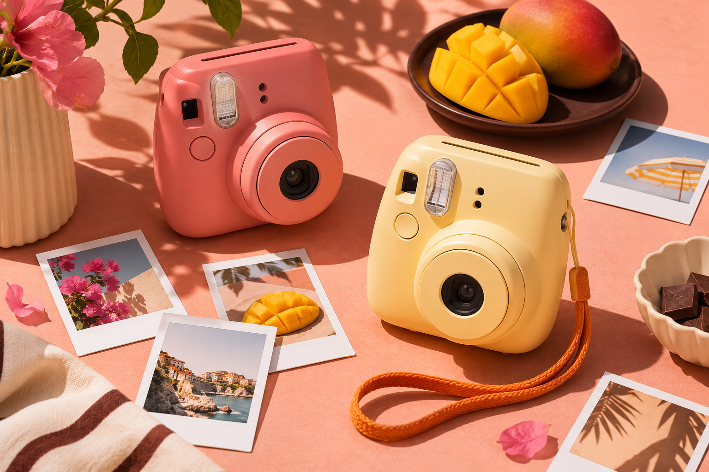
AMI! — работающий интернет-магазин на WooCommerce, который уже привлекает клиентов и принимает заказы.
Разработали визуальный стиль и интерфейс магазина, собрали сайт на WordPress и WooCommerce. Каталог, карточки товаров, выбор вариантов, корзина и оформление заказа объединены в понятный сценарий покупки. Полноценная мобильная версия сохраняет удобство на каждом этапе.
Сайт уже запущен и помогает магазину находить покупателей. По отзыву заказчика, после обновления дизайна и функциональности заказов стало заметно больше.